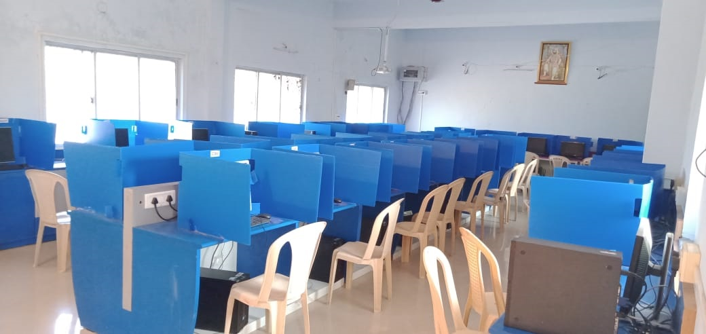

Our Campus

Nanded Hyderabad Highway, Lalwandi Road Naigaon (Bz) Tq. Naigaon
Dist.Nanded 431709 (Maharashtra)
We are offer the best Diploma course for student by KALAWATIBAI COLLEGE
A Diploma in Computer Engineering is a three-year undergraduate program focused on the fundamentals of computer systems, hardware, software, and their integration. It equips students with the knowledge and skills to work in various roles within the IT sector, including software development, network administration, and hardware engineering.
A Diploma in Electronics and Telecommunication (E&TC) Engineering is a three-year program focused on the principles and applications of electronics and communication systems. The curriculum covers a wide range of topics, including digital and analog circuits, communication systems, microprocessors, and more. Graduates are equipped to work in various industries, such as telecommunications, automation, and research and development.
A Diploma in Electrical Engineering is a three-year undergraduate program focused on the practical application of electrical and electronic principles. It equips students with the skills to analyze, design, and troubleshoot electrical systems, preparing them for entry-level engineering roles or further studies.
A Diploma in Mechanical Engineering is a 3-year program that focuses on the principles of mechanics, design, manufacturing, and maintenance of mechanical systems. It equips students with the practical skills needed for roles in various industries related to mechanical equipment, machines, and processes
Facilities provide for Students by kalawatibai college
The objective of the Canteen and meal service is to protect by reducing the risk of foodborne illness, with proper sanitary conditions.
Kalawatibai Polytechnic's internet facility allows students to access internet 24/7. High speed Wifi network surrounds campus and let student access it any time. Students can access E-books through internet. Our college has dedicated Internet Leased line of 32 Mbps, connected throughout the Campus. Students and faculties are free to access internet after the regular working hours.
Library is meant to fulfill the information needs of students, faculty and staff of various Departments of the Institute. One reading hall with a seating capacity of 40 has been provided with the Periodical Section where all the journals, newspapers and magazines are displayed.